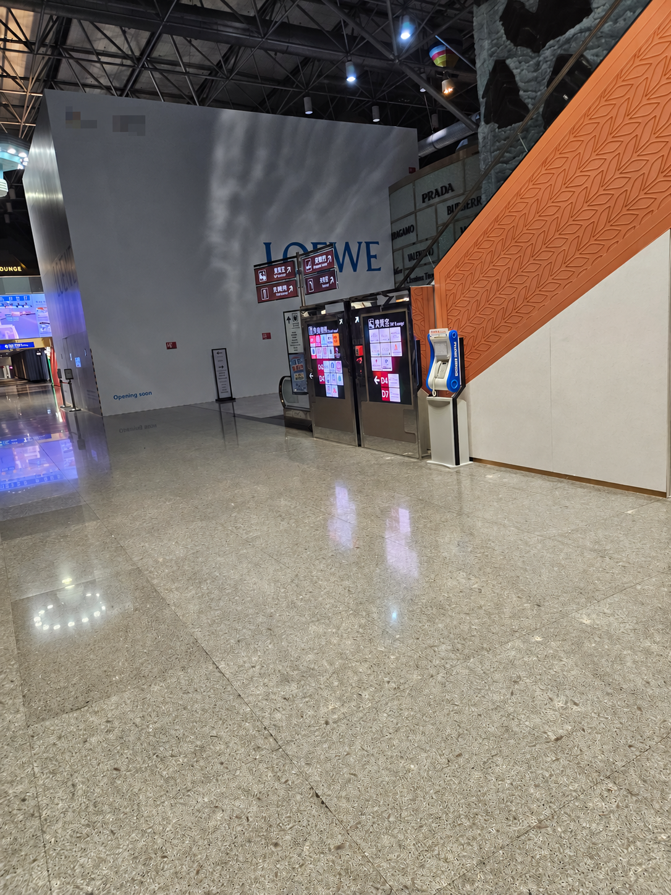
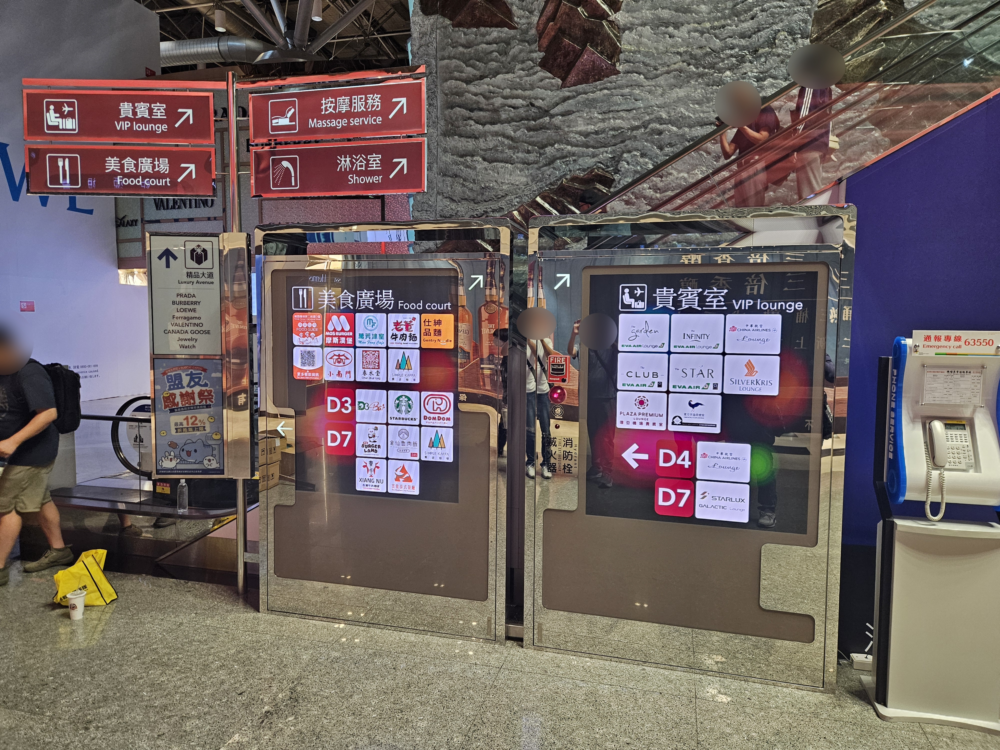
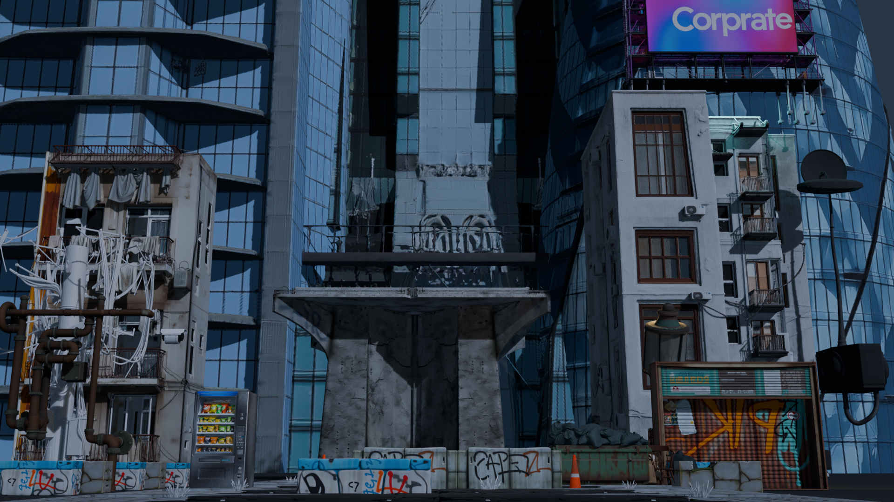
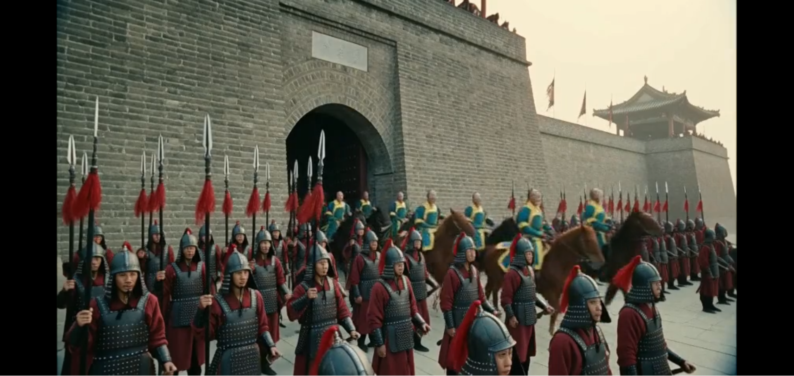
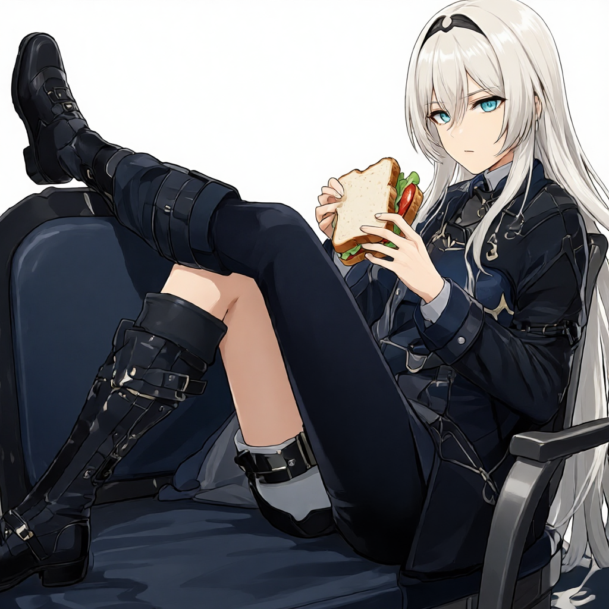
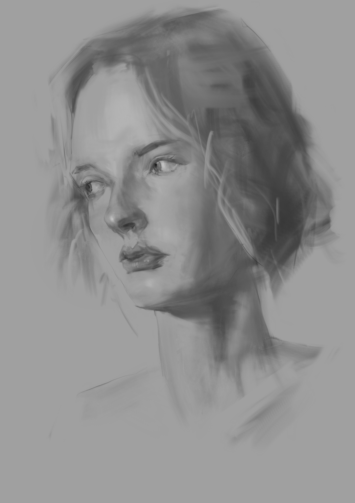
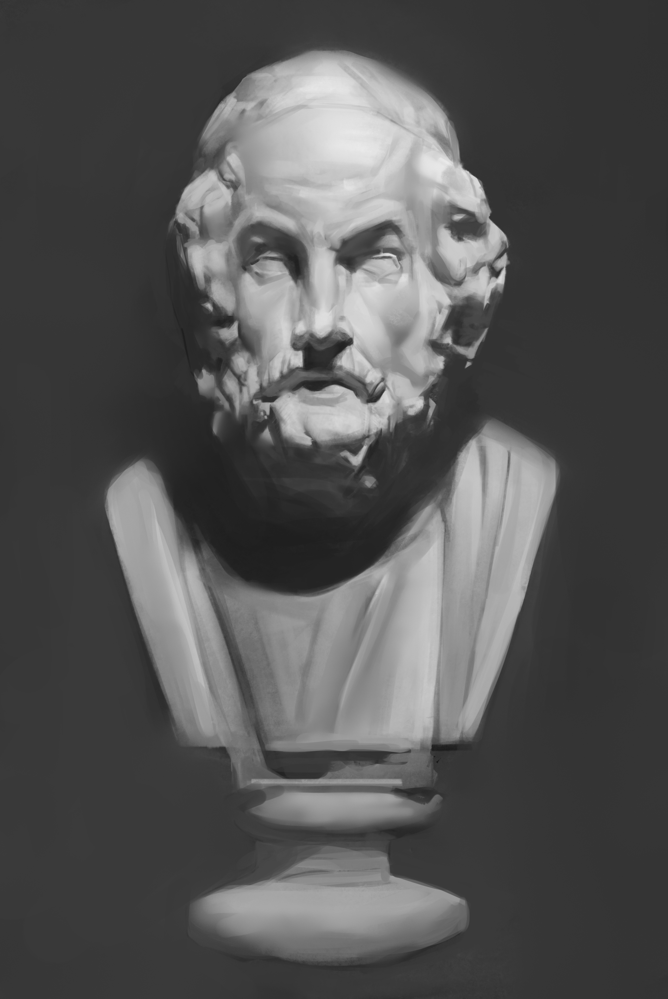
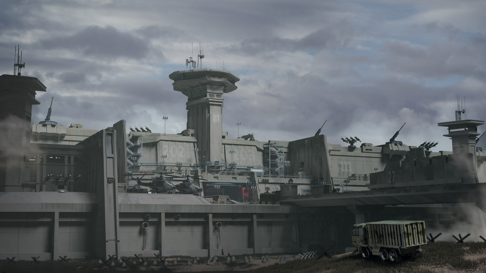
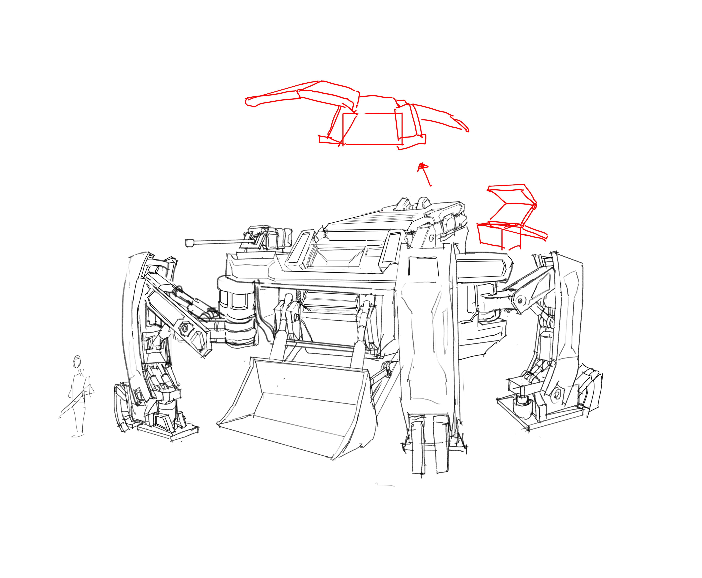
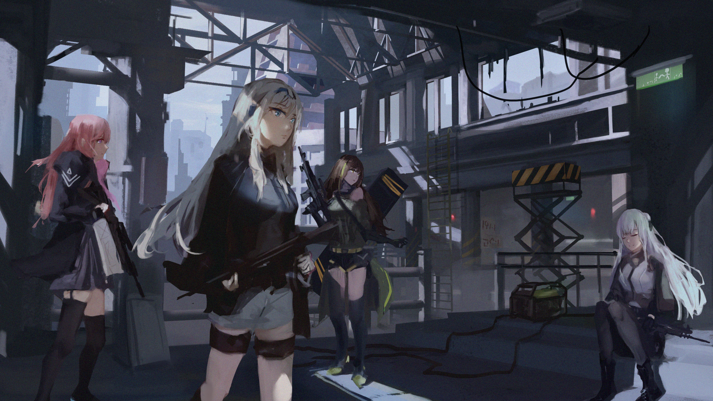

作品集 / 2026
Hello I am
Yen Chieh Huang.
AI 影像流程・工具整合・互動系統
工作經驗涵蓋 AI 影像流程、agent 工具整合，以及互動系統的開發與現場部署。
現職・再現影像 RENO STUDIOS Virtual Production 2026/02–
案例細節
作品與工作方式
01桃園機場第二航廈導覽看板
為免稅店客戶開發的互動導覽系統，已部署在桃園機場第二航廈管制區。一台 Windows IPC 啟動兩個 Edge kiosk 視窗，分別呈現美食廣場與貴賓室資訊；現場日常更新透過本機後台完成。


讓現場可調整內容
貴賓室商標支援置中或置底。`logo_align` 設定和後台選單讓現場人員能調整對齊方式，不必為每次換圖或微調版位重新修改 CSS、部署程式。
讓排程能從中斷恢復
草稿和生效時間寫入資料庫；兩面看板每 30 秒向本機 API 輪詢。設備關機錯過生效時間時，開機後會補套用；服務短暫重啟造成輪詢失敗時，也會在下一輪重試。更新通常在下一個輪詢週期顯示，排程依賴 IPC 系統時間。
發布與現場交接
內容更新、版本遞增與排程清除放在同一批資料庫操作；部署腳本會檢查頁面和圖片資源，再重啟看板。我也整理了後台編輯、預覽和發布的操作手冊。
02影視 AI Pipeline：從個人研究到正式鏡頭應用
公司製作應用
在公司特效工作中，我會依正式鏡頭需求嘗試 AI 影像流程。部分產出已用於影集，生成素材也能提供合成師取用與延伸。由於製作內容目前不便公開，這裡不展示影集畫面或名稱；以下以個人研究成果補充我探索與驗證的方法。
個人研究與環境準備
這些流程主要由我在工作以外研究，再依需求延伸到公司製作。研究時租用 GPU，每次測試都需自行重建執行環境，並以基本 Linux terminal 操作啟動和整理流程。
Blender MCP 場景生成
用 Blender MCP 讓 Claude 操作 Blender，搭配 Meshy AI 生成 3D 資產。在約兩個半小時內產出 25 項資產，組成頹敗城市街角場景並輸出測試渲染。
我也調整既有資產瀏覽器，讓 agent 能透過 API 呼叫 client 取得資產；client 會組合 prompt 和 API 說明，讓資產庫能接入 agent 工作流程。

ComfyUI／Minimax H3 影像流程
在個人研究中，遇到角色特徵相近、模型容易混淆身份時，我會先生成特徵更鮮明的參考，再把結果送回流程；也會從可用影像截圖修正細節，作為新的首幀。
使用 RunPod 租用 RTX 5090 減少生成成本；依目前記錄，SaaS 每次約 NT$20–30，自租 GPU 約 US$0.6–1／小時，單顆鏡頭約需 10–20 分鐘。

角色 LoRA 訓練
以單張來源圖建立多角度訓練資料，串接生成與自動打標；另以腳本配對圖片和標註、批次修正標籤，並用訓練集外的姿勢與畫風檢查角色特徵是否保持一致。

03OpenClaw 語意搜尋 skill
替約 560 張本地圖片建立語意索引。OpenClaw skill 將對話情境轉成搜尋詞，依相似度排序候選圖片，再依規則決定是否送到 Discord：低分時不送出，候選相近時再依對話情境選擇。這是檢索與 agent skill 流程，沒有模型微調或生成式回答。
04UE 資產 Migrate 架構
重寫 UE 內建資產遷移流程，用 RAII 管理操作期間的暫存狀態，並以 BFS 走訪依賴圖，建立拓樸順序、資產位置與可複製性資料，再依序驗證並執行複製。
方式Agent 協作與 MVP 交付
沒有專職 PM 時，我會用 grill-me 整理需求與範圍，再和 coding agent 對齊功能、分段完成小型 MVP。完成後以手動操作確認主要流程，並自行部署；需要驗證分離的前後端時，會另外用腳本測試。部署會接觸 Linux、SSH 和 Docker。
其他系統維護與技術排錯
- Gitea 導入：推動團隊採用版控，並以 AI 協助整理專案文件。
- 資料庫正規化：將單一欄位中的陣列拆成多對多關聯表，並以 Docker 重新包裝既有網站。
- freeD 訊號：製作模擬訊號協助除錯，再以 UDP 轉發到叢集節點。
- Linux／CUDA：排查驅動與開機設定，手動指定 CUDA_HOME 與 PATH 對齊編譯環境。
05PretenDF
修復 PDF「假 landscape」問題，處理頁面旋轉資訊錯誤，以及頁面與標註座標系統不同步。
前往 GitHub06GAMES101 計算機圖學作業
自主學習電腦圖學，完成透視矩陣、光柵化管線與 Blinn-Phong 著色等三份作業。
查看作業個人美術作品




